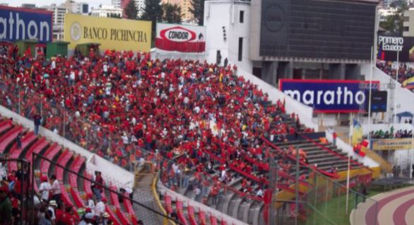
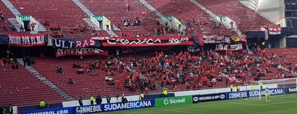

VIAJES
- FINAL DEL 2009
- Con 30 buses cerca 5 000 hinchas de la ciudad austral llegaron a la capital para alentar al club morlaco. Pedro Peña, gerente del equipo, informó que previamente se apartaron 4 000 boletos para los hinchas de la Crónica Roja.

- COPA SUDAMERICANA
- Cerca de 53 buses partieron hacia la ciudad de Quito para el partido correspondiente a la conmebol sudamericana valida por los octavos de final de la misma. “Desde Cuenca hemos viajado a todos los estadios donde ha jugado el equipo. Por más lejos que sea siempre hemos estado un grupo y los trapos de la barra se han flameado”, expresó Juan Segarra. Con el paso de los años, la Crónica Roja se ha consolidado y no como “barra brava”, porque dicen ser solo hinchas que alientan al equipo, más no ha hacerse daño entre ellos o los rivales.
